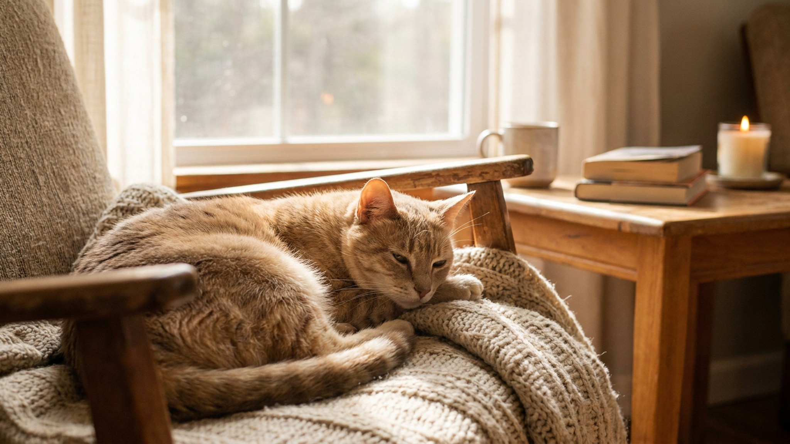

На вид — обычная кошка. Но европейская короткошёрстная (она же кельтская) — отдельная зарегистрированная порода со стандартом FIFe, а не «дворянка с родословной». За сходством с беспородными соседями скрывается закономерный характер и удивительно крепкое здоровье. Ниже — что важно знать тем, кто выбирает эту породу или уже живёт с ней.
Три часто путаемые категории:
Внешне европейская короткошёрстная напоминает крепкую деревенскую кошку, но с выверенным строением и предсказуемым темпераментом.
Европейская короткошёрстная — одна из самых адаптивных пород. Она хорошо ладит с детьми, спокойно принимает других питомцев, но при этом сохраняет независимость: не требует внимания каждую минуту.
🐾 У вас европейская короткошёрстная?
AnimaLife соберёт уход под породу: к каким болезням есть склонность, что проверять по возрасту, чем кормить и когда пора к врачу. Бесплатно, прямо в мессенджере.
Собрать план ухода → Собрать в MAX →
У вас iPhone? AnimaLife есть в App Store
Именно здесь европейская короткошёрстная выигрывает у полудлинношёрстных пород. Плотная, короткая, прилегающая шерсть практически не требует ухода:
Корм — полнорационный, сбалансированный. Порода не склонна к перееданию, но следить за весом стоит: стерилизованные кошки чаще набирают его избыток.
Европейская короткошёрстная считается одной из наиболее здоровых пород именно потому, что формировалась естественным путём без искусственных крайностей. Нет анатомических проблем британца (плоская морда, склонность к ожирению) и нет экзотических мутаций.
Порода подвижная — ей нужны ежедневные игры. Интерактивные удочки, мышки, туннели — всё идёт в ход. Вертикальное пространство (полки, когтеточки с площадками) повышает качество жизни. При достаточной активности и хорошем питании европейская короткошёрстная живёт 14–17 лет.
Профилактические визиты к ветеринару — раз в год до 7 лет, далее раз в 6 месяцев. Вакцинация и обработка от паразитов — по стандартному графику, который обсудите с врачом.
🐾 Ваш питомец — европейская короткошёрстная?
Заведите профиль в AnimaLife: приложение запомнит породу, возраст и вес и будет подсказывать по уходу именно для неё. Вопросы AI-ветеринару — круглосуточно и бесплатно.
Завести профиль → Завести в MAX →
У вас iPhone? AnimaLife есть в App Store
🐾 Понравился разбор?
Подпишитесь на канал — каждый день разбираем по одному тревожному симптому у кошек и собак: что в пределах нормы, а когда пора к врачу. Подпишитесь, чтобы не пропустить разбор, который может спасти здоровье вашего питомца.
Материал носит информационный характер и не заменяет очную консультацию ветеринара.